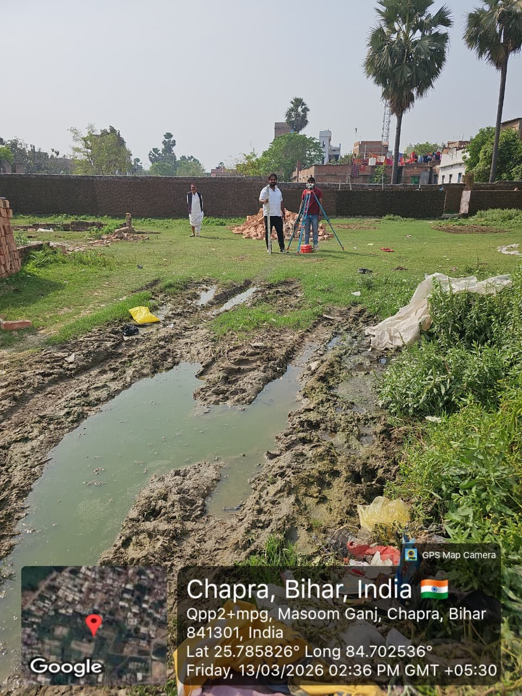
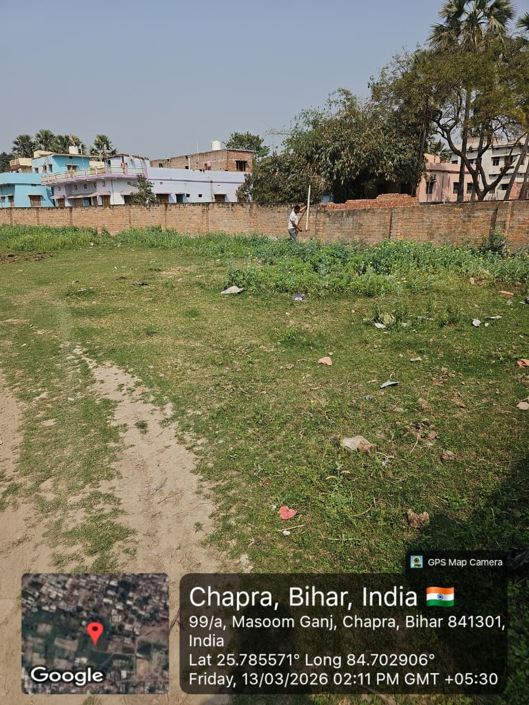
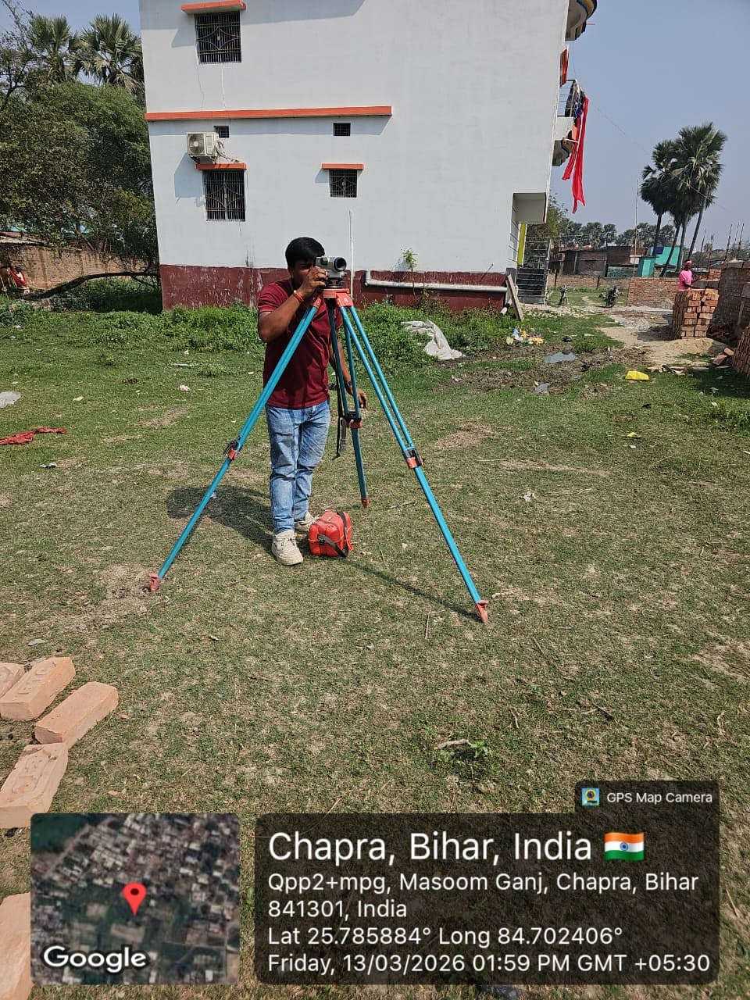
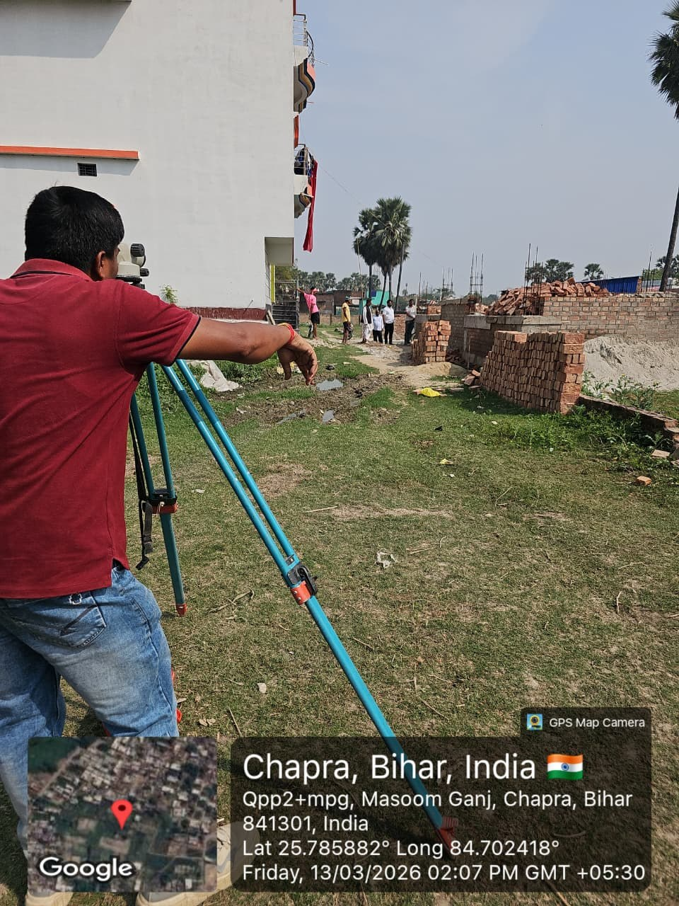

01 / CONNECTIVITY
Road Construction
Road development and related civil works to support local and regional connectivity.
Discuss this service ↗GOVERNMENT INFRASTRUCTURE PARTNER
Aarohan Constructions undertakes road, canal and public infrastructure construction work, with a focus on dependable execution and long-lasting impact.
OUR SERVICES
Construction work across roads, canals and civil infrastructure, aligned with project requirements and tender scope.

Road development and related civil works to support local and regional connectivity.
Discuss this service ↗
Canal, drainage and associated civil infrastructure works as defined by the project.
Discuss this service ↗
Public infrastructure and civil construction opportunities through tender-based work.
Discuss this service ↗
Site inspection, measurements and preparation activities as part of project execution.
Discuss this service ↗ABOUT AAROHAN CONSTRUCTIONS
Aarohan Constructions is a proprietorship firm registered in Patna, Bihar. The business focuses on tender-based construction work, including roads, canals and public infrastructure.
The company has identified the Rural Works Department, Government of Bihar, and Bihar Urban Infrastructure Development Corporation (BUIDCO) as relevant public infrastructure departments for its tender work. This website does not imply endorsement or a specific contract award.
View Business Details ↗SITE PHOTOGRAPHS
Photographs provided by Aarohan Constructions showing field survey activity, materials and site conditions in Chapra, Bihar.
These photos document site conditions and surveying activity; they are not presented as evidence of a completed road or canal project.
GOVERNMENT WORKS
Official department links associated with the tender-work areas described by the owner. Links are provided for reference only.
BUSINESS INFORMATION
Selected information transcribed from the GST registration certificate supplied for this demo. Please verify before public launch.
Contact the Company ↗Only selected certificate details are shown here; this is not a substitute for the official GST certificate.
LET'S CONNECT
Contact Aarohan Constructions for business enquiries, tender-related communication and construction discussions.
Choose your preferred contact method. Phone and email links work directly from compatible devices.
Call +91 90069 80915 ↗Send an Email ↗No form submission or data storage is used in this static demo.